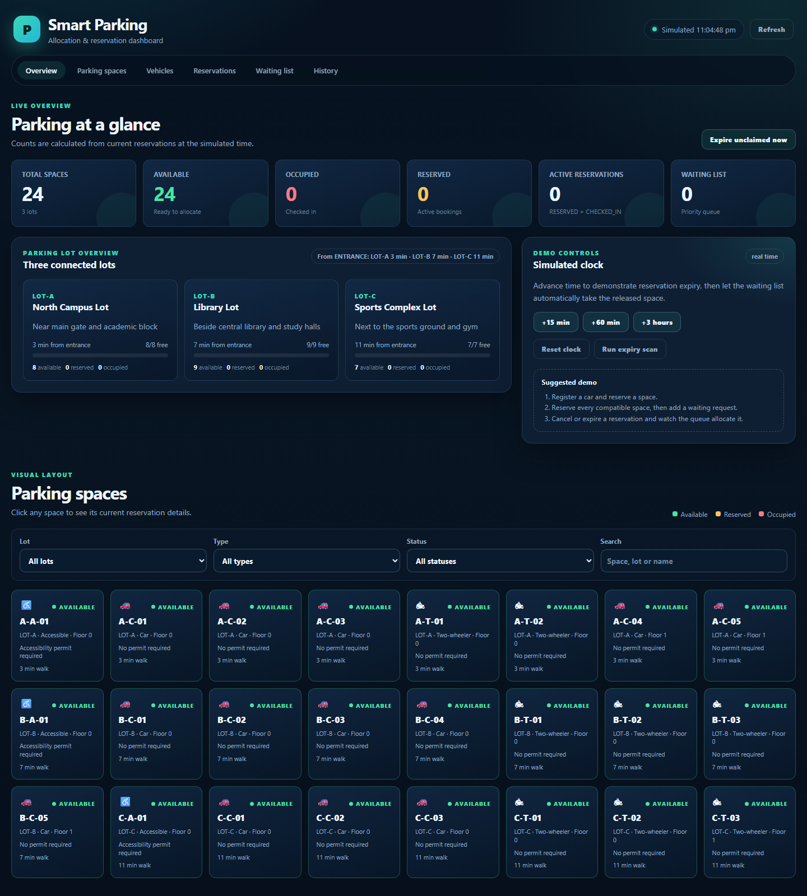
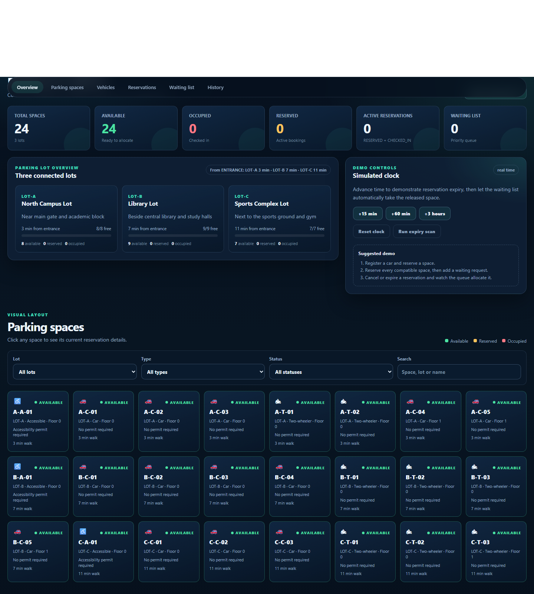
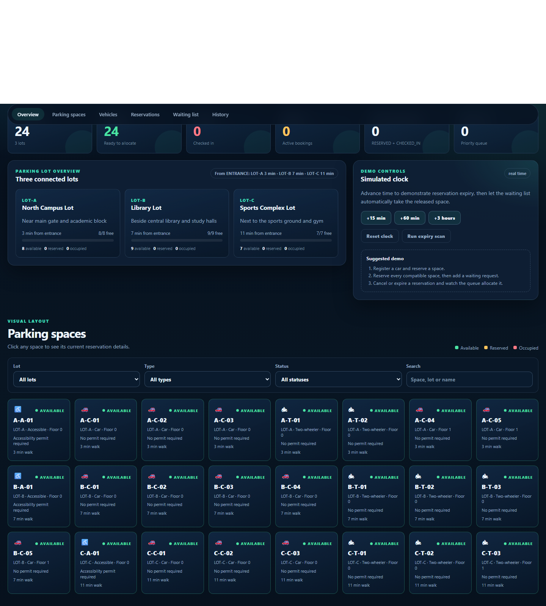
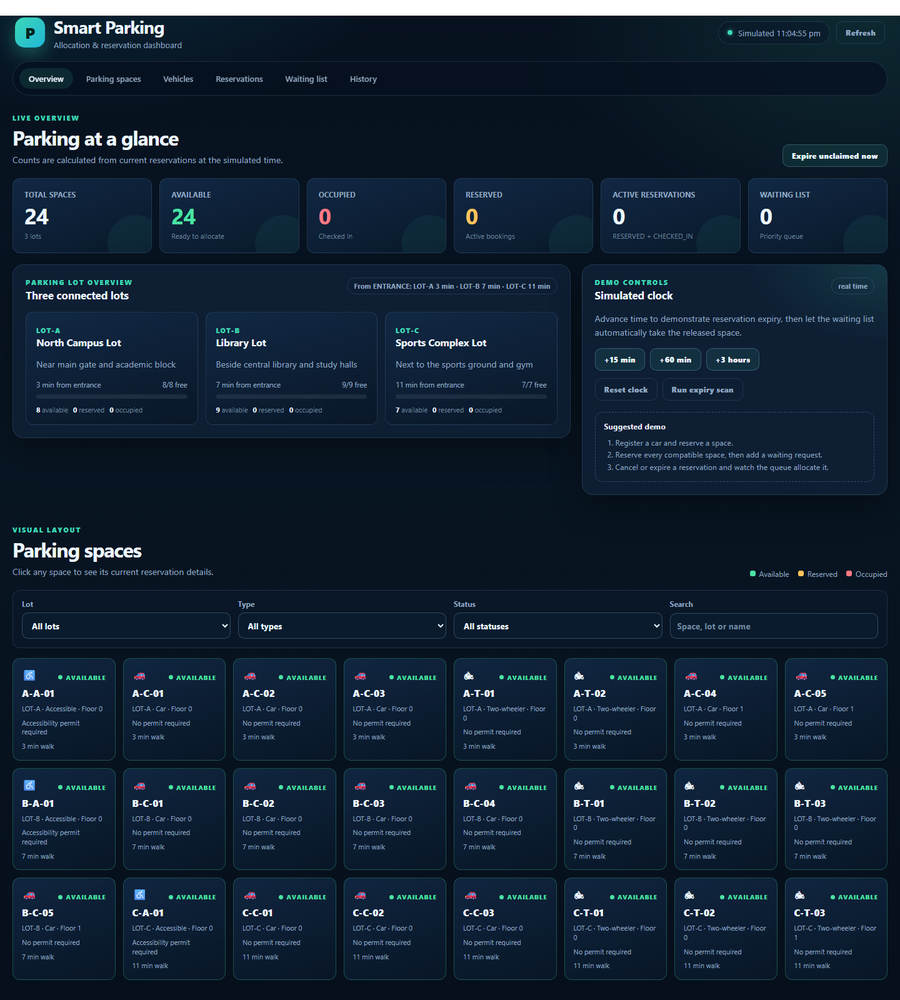
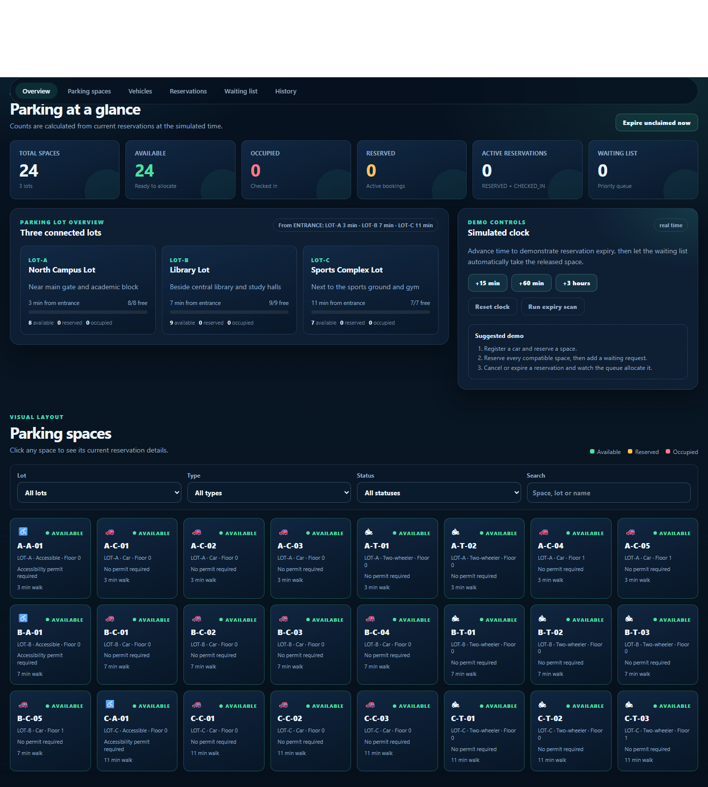

| NITHIESH M | Register No: ______________ |
| [Team Member Name] | Register No: ______________ |
This is to certify that the Mini Project report entitled “Smart Parking Allocation System” is the bonafide record of project work done by NITHIESH M (Register No: ______________) and [Team Member Name] (Register No: ______________) under my supervision for the mini-project requirement of the Bachelor of Engineering programme during the academic year 2025–2026.
| __________________________ Supervisor Department of CSE |
__________________________ Head of the Department Department of CSE |
Submitted for the end-semester viva voce examination held on ______________
Finding a free parking space in a college campus is still largely a manual process. Drivers enter a lot without knowing whether a compatible space is free, circle through rows of vehicles, and often block other vehicles while searching. There is no reservation facility, no fair queue when a lot is full, no priority for accessibility-permit holders, and no protection against two users being allotted the same space. A console-based record book or a simple entry/exit register cannot solve these problems because it stores history but does not make allocation decisions.
This project presents a Smart Parking Allocation System built with a Java and Spring Boot backend, a MySQL database, and a plain HTML/CSS/JavaScript dashboard. The system manages three parking lots with twenty-four spaces of three kinds: car, two-wheeler, and accessible. It registers vehicles, validates vehicle–space compatibility, prevents overlapping reservations, and automatically chooses the best free space. The choice is made by a slot-selection policy that first uses Dijkstra’s shortest-path algorithm on a weighted road graph to find the nearest lot from the campus entrance, then prefers the lower floor and the lower space code. A PriorityQueue with a HashMap index implements a waiting list in which accessibility-permit holders are served before standard users and earlier arrivals are served before later ones. Released spaces are re-offered to the queue automatically after the releasing transaction commits.
The backend enforces every business rule. The frontend only fetches data, renders it, and sends commands, so allocation, overlap, permit, and priority logic cannot be bypassed from the browser. MySQL is the source of truth; the in-memory index and waiting heap are rebuilt from the database on startup. Concurrency is handled with SELECT ... FOR UPDATE row locks, READ_COMMITTED isolation, an authoritative overlap re-check inside the lock, and JPA @Version optimistic locking. The project includes a simulated clock so that reservation expiry and fee calculation can be demonstrated without waiting in real time.
The Maven build completes successfully and the automated suite runs 12 integration tests with 0 failures and 0 errors. Manual API tests, database checks, and headless-browser UI checks also pass. The report documents the design, implementation, database schema, test cases, results, limitations, and future enhancements, and it explains how the project demonstrates object-oriented programming and core data structures and algorithms.
Keywords: smart parking, Spring Boot, MySQL, Dijkstra, PriorityQueue, HashMap, reservation, waiting list, REST API, object-oriented programming.
In a typical engineering campus, parking is handled by security staff and a manual register. A vehicle is allowed in if a space appears to be free, and the entry is written in a book. This approach has six practical problems:
The existing console application in the repository records vehicles and parking sessions, but it does not allocate spaces, check overlaps, rank a waiting list, or expose a web interface. A new system is required that makes the allocation decision in software and records it safely in a relational database.
Functional requirements
| ID | Requirement |
|---|---|
| FR-01 | The system shall display total, available, reserved, and occupied space counts for all lots. |
| FR-02 | The system shall list lots and spaces and allow filtering by lot, space type, status, and search text. |
| FR-03 | The system shall register a vehicle with number, owner name, type, and accessibility permit, and shall reject duplicate numbers. |
| FR-04 | The system shall allow an accessibility permit to be granted or removed and shall re-rank that vehicle’s waiting request. |
| FR-05 | The system shall allocate the nearest compatible free space automatically when no preferred space is given. |
| FR-06 | The system shall validate a preferred space for type and permit compatibility before booking. |
| FR-07 | The system shall reject a reservation that overlaps an active reservation for the same space or the same vehicle. |
| FR-08 | The system shall allow a RESERVED booking to be cancelled. |
| FR-09 | The system shall support check-in and check-out and shall calculate the fee on check-out. |
| FR-10 | The system shall expire unclaimed reservations after a configurable grace period. |
| FR-11 | The system shall maintain a priority waiting list and automatically allocate a released space to the highest-priority compatible request. |
| FR-12 | The system shall record an audit event for every reservation, cancellation, check-in, check-out, expiry, and waiting-list action. |
| FR-13 | The system shall provide a simulated clock that can be advanced and reset for demonstration and testing. |
| FR-14 | The system shall expose a JSON REST API with correct HTTP status codes and consistent error bodies. |
Non-functional requirements
| ID | Requirement |
|---|---|
| NFR-01 | The backend shall be implemented entirely in Java with Spring Boot; no Python, Node.js, or PHP backend is permitted. |
| NFR-02 | Data shall be stored in MySQL/MariaDB with ACID transactions, primary keys, foreign keys, unique constraints, checks, and indexes. |
| NFR-03 | The dashboard shall load within one second for the seeded 24-space dataset on a normal laptop. |
| NFR-04 | Concurrent bookings shall not create a double booking for the same space and overlapping window. |
| NFR-05 | The user interface shall be usable on a desktop browser and shall show clear success and error messages. |
| NFR-06 | The code shall follow a layered architecture with small classes, constructor injection, and no generated boilerplate. |
| NFR-07 | Business rules shall be testable through automated integration tests using an in-memory database. |
| NFR-08 | The application shall run on Windows or Linux with Java 17 and MySQL 8.x or MariaDB 10.4+. |
| NFR-09 | Input shall be validated on the server; database credentials shall not be committed to version control. |
| NFR-10 | The project shall include a README, API reference, UML diagrams, design notes, and test cases. |
The project aligns primarily with United Nations Sustainable Development Goal 11 – Sustainable Cities and Communities, especially target 11.2 (safe, affordable, accessible, and sustainable transport systems) and target 11.6 (reducing the adverse environmental impact of cities). Parking search traffic is a measurable contributor to urban congestion and emissions. By telling a driver exactly where to go, the system reduces cruising distance and idling. By reserving accessible bays only for permit holders, it supports inclusive mobility. By replacing paper registers with a database, it reduces paper use and makes records auditable.
| SDG | Alignment | Expected impact |
|---|---|---|
| SDG 11 Sustainable Cities and Communities | Smart allocation, real-time availability, reservation, accessible priority | Shorter search time, less congestion, inclusive access, organised campus mobility |
| SDG 9 Industry, Innovation and Infrastructure | Digital infrastructure, REST API, database-backed service | Reusable smart-campus platform that can be extended to more lots and sensors |
| SDG 13 Climate Action | Reduced cruising and idling; fewer unnecessary vehicle kilometres | Lower fuel consumption and CO2 emissions per parking event |
The proposed system is a web-based smart parking allocation platform. A driver opens the dashboard, registers a vehicle once, chooses a start and end time, and optionally chooses a preferred space. The Java backend then performs a fixed pipeline: validate the time window, check that the vehicle has no overlapping booking, filter spaces by type and permit compatibility, remove spaces with overlapping intervals, rank the remainder, lock the chosen rows, re-check the overlap inside the lock, and insert the reservation. The response tells the driver exactly which space and lot were allocated.
The major modules are:
| Capability | Manual register | Legacy console app | Proposed system |
|---|---|---|---|
| Real-time availability | No | No | Yes, dashboard and API |
| Automatic allocation | No | No | Yes, compatible + nearest |
| Reservation and overlap check | No | No | Yes, space and vehicle |
| Waiting list with priority | Informal | No | Yes, PriorityQueue |
| Accessibility permit rule | Manual | No | Enforced in Java |
| Fee calculation | Manual | Basic | Automatic, rounded up |
| Audit history | Paper | File | Database table |
| Concurrency safety | None | None | Row locks + version |
The domain model uses real Java inheritance rather than string switches. The main classes and their responsibilities are listed below.
| Class / interface | Responsibility |
|---|---|
ParkingLot | Lot code, name, address, graph node, and its spaces. |
ParkingSpace (abstract) | Common space fields and abstract canAccommodate(), requiresPermit(), getKind(). |
CarSpace, TwoWheelerSpace, AccessibleSpace | Concrete compatibility rules for each space type. |
Vehicle (abstract) | Number, owner, permit, creation time, abstract getKind(). |
CarVehicle, TwoWheelerVehicle | Concrete vehicle kinds mapped by a discriminator column. |
Reservation | Booking window, status, check-in/out timestamps, fee, version. |
WaitingRequest | Durable waiting-list row: window, priority, arrival, status, allocated reservation. |
ParkingEvent | Audit trail entry with type, vehicle, space, lot, message, and fee. |
RoadSegment | Weighted edge of the campus road graph. |
ReservationService | Booking transaction, lifecycle transitions, expiry, row locks. |
ParkingAllocationService | Eligibility filtering, interval checks, policy invocation. |
WaitingListService | PriorityQueue and HashMap index, join, cancel, re-rank, rebuild. |
WaitingListProcessor | Reconsiders the queue after a release in separate transactions. |
TravelTimeService | Builds the weighted graph and runs Dijkstra from the entrance. |
ParkingFeeService | Rate, minimum duration, and ceiling rounding with BigDecimal. |
ClockService | Real time plus an in-memory simulated offset. |
SlotSelectionPolicy (abstract) | Strategy for ordering eligible spaces. |
NearestAvailableSpacePolicy | Travel time, then floor, then code. |
ParkingIndex | HashMap/ArrayList in-memory interval index for fast pre-checks. |
WeightedGraph, DijkstraShortestPath | Adjacency-list graph and min-heap shortest-path algorithm. |
Abstraction. ParkingSpace declares the behaviour that the rest of the system needs, without exposing how each type decides compatibility.
public abstract class ParkingSpace {
public abstract boolean canAccommodate(Vehicle vehicle);
public abstract boolean requiresPermit();
public abstract SpaceKind getKind();
}
Inheritance. CarSpace, TwoWheelerSpace, and AccessibleSpace extend ParkingSpace; CarVehicle and TwoWheelerVehicle extend Vehicle; NearestAvailableSpacePolicy extends SlotSelectionPolicy. JPA maps the two hierarchies with InheritanceType.SINGLE_TABLE and discriminator columns, so the schema stays small while Java keeps polymorphism.
Polymorphism. The allocation service calls space.canAccommodate(vehicle) and lets the JVM dispatch to the correct subclass. Adding an EV-charging space would mean adding one subclass, not editing a long if/else chain.
Encapsulation. Entity fields are private; ParkingIndex synchronises map access and returns immutable snapshots; the waiting queue is private and exposed only through ordered views.
Composition. A lot has spaces, a reservation has a vehicle and a space, WaitingListService has a queue and a map, and WeightedGraph has an adjacency list.
Strategy pattern. SlotSelectionPolicy is an abstract strategy. The default policy orders by Dijkstra time, floor, and code. A different policy can be introduced without touching the allocation service.
The project deliberately uses a small set of well-understood structures so that each one has a clear role in the demonstration.
| Structure / algorithm | Where it is used | Why it is appropriate | Complexity |
|---|---|---|---|
HashMap | ParkingIndex maps by space id, vehicle number, and reservation id | Average constant-time lookup during pre-checks | O(1) average |
HashMap<Long, ArrayList<ReservationInterval>> | Intervals grouped by space | Only scan the intervals of the candidate space | O(1) bucket, O(k) scan |
ArrayList | Ranked candidate list | Preserves policy order and allows iteration | O(1) append, O(n) scan |
PriorityQueue (min-heap) | Dijkstra frontier | Always expand the nearest known node | O(log V) insert/poll |
PriorityQueue (max-priority) | Waiting list | Highest-priority request is always first | O(log W) insert/poll |
| Weighted graph (adjacency list) | Campus roads | Sparse graph, O(V + E) memory | O(V + E) memory |
| Dijkstra shortest path | Nearest lot selection | Positive road weights, single source | O((V + E) log V) |
| Half-open interval overlap | Reservation conflict check | Back-to-back bookings are allowed | O(1) per pair |
Dijkstra in the allocation path. The road graph is stored in the road_segments table and loaded into WeightedGraph. The seeded graph is:
ENTRANCE --3-- LOT-A ENTRANCE --7-- LOT-B ENTRANCE --12- LOT-C LOT-A ----5-- LOT-B LOT-B ----4-- LOT-C LOT-A ----9-- LOT-C
Running Dijkstra from ENTRANCE gives LOT-A = 3, LOT-B = 7, and LOT-C = 11. The direct road to LOT-C is 12 minutes, but the path ENTRANCE → LOT-B → LOT-C is 7 + 4 = 11. This is the clearest proof that the implementation computes shortest paths rather than copying a static column.
Waiting-list priority. The comparator is:
Comparator.comparingInt(WaitingTicket::accessPriority).reversed()
.thenComparing(WaitingTicket::arrivalTime)
.thenComparing(WaitingTicket::id);
Permit holders have priority 1 and standard users priority 0. Ties are broken by arrival time and then by id, so the order is deterministic. The heap gives O(log n) insertion and removal; the accompanying HashMap gives O(1) lookup by request id.
Overlap rule. Two intervals overlap when existing.start < requested.end and existing.end > requested.start. This is the standard half-open test. For example, 10:00–12:00 and 12:00–14:00 do not overlap, while 10:00–12:00 and 11:00–13:00 do. Only RESERVED and CHECKED_IN reservations block a space; cancelled, completed, and expired rows do not.
Allocation workflow.
canAccommodate(vehicle).The system uses a layered architecture. The browser is a thin client; the Java backend owns every rule; MySQL is the durable store.
Browser (HTML + CSS + vanilla JavaScript)
|
| fetch() JSON over HTTP
v
REST controllers (com.smartparking.controller)
|
v
Service layer (com.smartparking.service)
reservation rules, allocation, waiting list, fee, clock, queries
|
+---------------------------+
| |
v v
Spring Data JPA repositories Algorithm package
(com.smartparking.repository) (com.smartparking.algorithm)
| |
v +-- WeightedGraph + Dijkstra
MySQL / MariaDB +-- PriorityQueue waiting list
(source of truth) +-- HashMap / ArrayList index
Layer responsibilities. Controllers validate input, call a service, and choose the HTTP status. Services enforce business rules and open transactions. Repositories only query and persist. The algorithm package contains pure data structures and ordering and never touches the database. The frontend renders state and sends commands but never decides which space is “best”.
Methodology. The project was built incrementally: (1) inspect the existing console application, (2) design the schema and domain model, (3) implement repositories and services, (4) add the allocation and waiting-list algorithms, (5) expose REST endpoints, (6) build the dashboard, (7) add tests and documentation, and (8) package and verify the application. Each step was compiled and tested before the next was started. Git was used to keep a recoverable history.
Timeline and milestones.
| Week | Milestone | Deliverable |
|---|---|---|
| 1 | Requirement study and existing-code inspection | Problem statement, objectives, feature list |
| 2 | Domain and database design | Entities, schema.sql, sample-data.sql, UML draft |
| 3 | Core services and algorithms | Allocation, Dijkstra, waiting list, reservation lifecycle |
| 4 | REST API and error handling | Controllers, DTOs, validation, global exception handler |
| 5 | Frontend dashboard | index.html, styles.css, app.js, screenshots |
| 6 | Testing, documentation, packaging | 12 integration tests, README, API/UML/design/test docs, JAR |
Team responsibilities.
| Member | Responsibility |
|---|---|
| NITHIESH M | Backend services, allocation algorithm, database schema, testing |
| [Team Member Name] | Frontend dashboard, documentation, demonstration and screenshots |
Resources. Java 17 JDK, Maven 3.9+, Spring Boot 3.3.5, MySQL 8.x or MariaDB 10.4 (XAMPP), a browser, Git, and a text editor or IDE. All tools used are free and open source.
Risks and mitigation.
| Risk | Impact | Mitigation |
|---|---|---|
| Two users book the same space | Double booking, inconsistent data | Vehicle and space row locks, READ_COMMITTED, authoritative re-check, @Version |
| Wrong space type allocated | Policy violation, user complaint | Compatibility implemented in space subclasses and tested |
| Database unavailable during demo | Application cannot start | Seed scripts, clear README, H2 profile for tests, restart instructions |
| Clock-dependent tests are flaky | False failures | Injected ClockService, simulated offset, fresh context per test |
| Waiting queue lost on restart | Lost requests | waiting_requests table rebuilt into the heap on startup |
| Scope creep | Missed deadline | Fixed feature list; authentication and payments explicitly out of scope |
| Secrets committed | Security issue | Local overrides ignored by .gitignore; no passwords in the repository |
Test planning overview. Tests are layered: integration tests for business rules, manual API tests against MariaDB for the real database path, and headless-browser checks for rendering. The plan covers success, overlap, incompatible type, missing permit, full lot, cancellation, expiry, check-in/check-out, waiting allocation, and priority ordering.
| Layer | Technology | Version / role |
|---|---|---|
| Language | Java | 17 (records, switch expressions, modern collections) |
| Backend framework | Spring Boot | 3.3.5 – auto-configuration, embedded Tomcat |
| Web layer | Spring MVC / REST | JSON controllers, validation, exception handling |
| Persistence | Spring Data JPA / Hibernate | 6.5 – entities, repositories, transactions, locking |
| Database | MySQL / MariaDB | 8.x / 10.4.32, InnoDB, foreign keys, indexes |
| Driver | MySQL Connector/J | JDBC connectivity |
| Validation | Jakarta Bean Validation | Field constraints and error details |
| Build | Apache Maven | 3.9.9 – dependency management and packaging |
| Test database | H2 | 2.2.224 in MySQL compatibility mode |
| Frontend | HTML5, CSS3, JavaScript (ES6) | No framework and no build step; served as static files |
| Browser testing | Microsoft Edge headless | DOM and screenshot verification |
| Version control | Git and GitHub | Source hosting and commit evidence |
| Environment | Windows 11, PowerShell, XAMPP | Development and local database |
The dashboard is a single page served by Spring Boot at http://localhost:8080/. It is built from three static files: index.html (structure), css/styles.css (layout and theme), and js/app.js (fetch, render, and actions). There is no React, Angular, or Node build step.
Layout. A sticky header shows the application name, a simulated-clock chip, and navigation links. The main area contains:
Validation and interaction. HTML attributes provide immediate hints (required fields, number ranges, date inputs), but the server is authoritative. When the backend returns an error, the JavaScript displays the JSON message and appends any details entries in a red alert; success messages appear in green. The frontend never filters “allowed” spaces by itself. It sends vehicleId, startTime, endTime, and an optional preferredSpaceId, and displays whatever the backend allocates.
Responsive and accessible design. CSS grid and flexbox reflow the cards and tables on narrow screens. Form controls have labels, buttons have descriptive text, and colour is paired with text so that status is not conveyed by colour alone. The page uses a dark theme with sufficient contrast.
The database is named smart_parking and uses InnoDB with utf8mb4. Seven tables model the domain.
| Table | Purpose | Keys and constraints |
|---|---|---|
parking_lots | Three lots and their graph node | PK id; unique code, unique travel_node |
road_segments | Weighted campus road graph | PK; unique (from_node, to_node); check travel_minutes > 0 |
vehicles | Cars and two-wheelers | PK; unique vehicle_number; discriminator vehicle_kind |
parking_spaces | 24 spaces of three kinds | PK; unique code; FK lot_id; check floor_number >= 0; indexes on lot and (lot, floor) |
reservations | Bookings and lifecycle | PK; unique reservation_code; FKs to vehicle and space; check end_time > start_time; indexes on (space, status, start, end), (vehicle, status, start, end), status; version |
waiting_requests | Durable waiting list | PK; FK to vehicle; checks on window and priority; index on (status, arrival_time); version |
parking_events | Audit trail | PK; indexes on occurred_at and vehicle_number |
Entity relationships. One lot has many spaces. One vehicle has many reservations and many waiting requests. One space has many reservations. A waiting request optionally points to the reservation it produced. Parking events are intentionally not linked by a foreign key so that history survives maintenance that removes old reservations; they store the vehicle number, space code, and lot code as text.
Connectivity. Spring Data JPA with Hibernate maps the entities to these tables. The connection is configured in application.properties:
spring.datasource.url=jdbc:mysql://localhost:3306/smart_parking?useSSL=false&allowPublicKeyRetrieval=true&serverTimezone=Asia/Kolkata&characterEncoding=utf8 spring.datasource.username=root spring.datasource.password= spring.datasource.driver-class-name=com.mysql.cj.jdbc.Driver spring.jpa.hibernate.ddl-auto=update spring.jpa.open-in-view=false
CRUD operations. Repositories extend JpaRepository and add derived queries such as findByVehicleNumberIgnoreCase, findByStatusOrderByArrivalTimeAsc, and overlap-count queries. Services call these methods inside transactions. Controllers never touch repositories directly.
Transactions and concurrency. A booking transaction runs at READ_COMMITTED, locks the vehicle row, locks the candidate space row, re-runs the overlap count inside the lock, and only then inserts. The lock order is always vehicle then space. @Version on Reservation and WaitingRequest catches lost updates. Each waiting-list allocation attempt uses REQUIRES_NEW so that one failure does not roll back a later success.
Seed data. database/schema.sql creates the tables and database/sample-data.sql inserts 3 lots, 24 spaces (13 car, 8 two-wheeler, 3 accessible), 6 road segments, 4 demo vehicles, and 1 sample history event. The counts were verified against MariaDB 10.4.32.
VehicleService normalises the vehicle number to uppercase without spaces, checks for a duplicate, and creates the correct subclass through a small factory decision based on VehicleKind. Bean Validation enforces a 4–20 character number, a non-blank owner name, and a valid enum. A duplicate returns 409 Conflict; an invalid enum or blank field returns 400 Bad Request. The permit endpoint changes the flag and triggers a waiting-list re-rank.
ParkingAllocationService is the core of the project. It loads the spaces, applies canAccommodate, consults the ParkingIndex, queries the database for overlapping active reservations, and passes the survivors to NearestAvailableSpacePolicy. The policy sorts by travel minutes, floor, and code. The result is an ordered List<ParkingSpace>.
public List<ParkingSpace> order(Vehicle vehicle,
List<ParkingSpace> candidates,
Map<Long, Integer> travelMinutesByLotId) {
return candidates.stream()
.filter(space -> space.canAccommodate(vehicle))
.sorted(comparator(travelMinutesByLotId))
.toList();
}
The service does not contain a type switch. Compatibility lives in the space subclasses, so the rule is both testable and extensible.
ReservationService implements the state machine:
RESERVED --check-in--> CHECKED_IN --check-out--> COMPLETED | +--cancel--> CANCELLED +--grace expired--> EXPIRED
Only RESERVED can be cancelled. Check-in opens 30 minutes before the start and is refused after the end. Check-out is allowed only from CHECKED_IN and calculates the fee from the check-in timestamp. Every transition writes a ParkingEvent. The service publishes a ReservationReleasedEvent after cancellation, expiry, or check-out so the waiting list can be reconsidered.
WaitingListService keeps a PriorityQueue<WaitingTicket> and a HashMap<Long, WaitingTicket>. A join validates the window, checks for a duplicate request, computes the access priority from the permit, and inserts both the database row and the heap entry. Cancellation removes the row and the heap entry. A permit change rebuilds the heap because changing a key inside a PriorityQueue does not re-heapify it. On startup, all WAITING rows are loaded and the heap is rebuilt, so a restart does not lose the queue.
WaitingListProcessor listens with @TransactionalEventListener(AFTER_COMMIT). It iterates over a priority-ordered copy of the queue and, for each request, locks the waiting row, expires it if its window has passed, locks the vehicle, and runs the same allocation pipeline as a normal booking. A success marks the request ALLOCATED, stores the reservation id, removes it from the heap, and writes a history event. A failure leaves it queued. A waiting request is never forced into an incompatible or overlapping space.
ReservationExpiryJob runs every 30 seconds (configurable). It finds RESERVED bookings whose start plus the grace period is before the simulated now, marks them EXPIRED, writes events, and triggers waiting-list processing. The dashboard also exposes a manual “Expire unclaimed now” button for a live demonstration.
ParkingFeeService uses BigDecimal and RoundingMode.CEILING. A car is charged ₹50 per hour and a two-wheeler ₹20 per hour, with a minimum of one hour and part hours rounded up. A 90-minute car stay is therefore charged for 2 hours = ₹100.00. The fee is stored on the reservation and copied to the history event.
ClockService stores an offset in minutes and returns realNow().plusMinutes(offset). Every business rule uses this method: window validation, check-in, expiry, fee duration, waiting expiry, and dashboard status. The offset is in memory, so restarting the application resets it to real time.
ParkingQueryService assembles the dashboard, lot, space, reservation, waiting, and history responses. Space status is derived at the simulated now: a CHECKED_IN reservation makes a space OCCUPIED; a RESERVED reservation whose window contains now makes it RESERVED; otherwise it is AVAILABLE. This avoids a stale status column.
GlobalExceptionHandler converts validation errors, not-found errors, conflicts, business-rule errors, and unexpected exceptions into one JSON shape with timestamp, status, error, message, path, and details. Missing static resources return a clean 404 instead of a logged 500.
The following sequence is the recommended end-to-end demonstration. It exercises every major module and produces visible evidence in the dashboard and in MySQL.
schema.sql and sample-data.sql in MySQL/MariaDB.mvn spring-boot:run or java -jar target/smart-parking-system-1.0.0.jar. Open http://localhost:8080/.TN55XY9090, owner name, type CAR, and no permit. The vehicle appears in the directory.A-C-01 in LOT-A, the nearest compatible lot, and the reservation table shows RESERVED.409 Conflict and the dashboard shows the reason.422 Unprocessable Entity with a clear message.COMPLETED and the fee is ₹100.00 for a car.EXPIRED and the space is released.reservations, waiting_requests, and parking_events rows to prove that the UI actions were persisted.The screenshots below were captured from the running application on 29 October 2026 using headless Microsoft Edge at a 1440-pixel viewport.





Database evidence. After the demonstration, the following rows were present in MySQL (values shown are representative of the seeded and test data):
| Table | Observed rows |
|---|---|
parking_lots | 3 (LOT-A, LOT-B, LOT-C) |
parking_spaces | 24 (13 car, 8 two-wheeler, 3 accessible) |
road_segments | 6 |
vehicles | 4 seeded, plus any registered during the demo |
reservations | One row per booking, with status, window, timestamps, and fee |
waiting_requests | One row per waiting request, with priority, arrival, and allocation link |
parking_events | One row per reservation, cancellation, check-in, check-out, expiry, and waiting action |
Testing used three complementary layers. Automated integration tests run against H2 in MySQL mode with a fresh Spring context and database for each method. Manual API tests run against MariaDB 10.4.32 through the real HTTP endpoints. Frontend checks load the dashboard in headless Edge and inspect the rendered DOM and screenshots.
Automated integration tests. File: src/test/java/com/smartparking/SmartParkingIntegrationTest.java. Latest result: 12 tests, 0 failures, 0 errors, 0 skipped; BUILD SUCCESS.
| ID | Scenario | Expected result | Status |
|---|---|---|---|
| AT-01 | Seeded dashboard and lists | 24 spaces, 24 available, 3 lots, 0 active, 0 waiting | PASS |
| AT-02 | Dijkstra shortest path | LOT-A 3, LOT-B 7, LOT-C 11 minutes | PASS |
| AT-03 | Smart allocation for a car | 201, RESERVED, A-C-01, LOT-A | PASS |
| AT-04 | Space and vehicle overlap | ConflictException with clear messages | PASS |
| AT-05 | Incompatible type and missing permit | BusinessRuleException with clear messages | PASS |
| AT-06 | Reversed time window | 422, “End time must be after start time” | PASS |
| AT-07 | Duplicate vehicle and invalid enum | 409 and 400 | PASS |
| AT-08 | Full car lot, waiting, cancellation | 409 when full; automatic allocation after release | PASS |
| AT-09 | Waiting-list priority | Permit holder position 1, standard position 2 | PASS |
| AT-10 | Expiry after grace period | 1 reservation EXPIRED | PASS |
| AT-11 | Check-in and fee rounding | COMPLETED, ₹100.00 for 90 minutes | PASS |
| AT-12 | Simulated clock | Offset 15, then 0 after reset | PASS |
Manual API tests (MariaDB). Seventeen scenarios were executed through the real HTTP API. Representative cases:
| ID | Scenario | Expected | Actual | Status |
|---|---|---|---|---|
| MT-01 | Run schema and sample data | No SQL errors; 3/24/6/4/1 counts | Exit 0; counts match | PASS |
| MT-03 | Register a car | 201 Created | 201, id 5 | PASS |
| MT-06 | Smart allocation | 201, A-C-01 in LOT-A | 201, A-C-01, LOT-A | PASS |
| MT-07 | Overlapping vehicle | 409 Conflict | 409 with message | PASS |
| MT-08 | Two-wheeler in car space | 422 Unprocessable Entity | 422, “reserved for cars” | PASS |
| MT-09 | Missing accessibility permit | 422 Unprocessable Entity | 422, permit message | PASS |
| MT-10 | Unknown vehicle id | 404 Not Found | 404 | PASS |
| MT-12 | Check-in | 200, CHECKED_IN | 200, CHECKED_IN | PASS |
| MT-13 | Check-out fee | 200, COMPLETED, ₹50.00 | 200, COMPLETED, 50.00 | PASS |
| MT-14 | Waiting-list priority | 201, position 1, priority 1 | Matches | PASS |
| MT-15 | Release triggers allocation | Queue empty; new RESERVED booking | Matches | PASS |
| MT-16 | Expiry scan | 200, expired count ≥ 1 | expired = 2 | PASS |
Frontend checks. Headless Edge verified that the page, CSS, and JavaScript load; that 24 space cards and 3 lot cards render; that the counters and travel-time chip are correct; that the waiting list shows a clear empty message; that the modal is hidden initially; and that the favicon request does not produce a server error. All 12 checks passed.
Bug and defect correction log.
| ID | Defect | Root cause | Correction | Status |
|---|---|---|---|---|
| BUG-01 | Space modal visible on first load | .modal-backdrop CSS overrode the hidden attribute | Added [hidden] { display: none !important; } | Fixed |
| BUG-02 | Preferred-space dropdown missed spaces after filtering | Options were built from the filtered grid | Build options from the full lot snapshot | Fixed |
| BUG-03 | Missing favicon produced a logged 500 | No handler for missing static resources | Added a NoResourceFoundException handler returning 404 | Fixed |
The Maven build completed successfully and produced a runnable JAR. The packaged application started in about 6.15 seconds on the test laptop and served the dashboard, CSS, JavaScript, favicon, and REST endpoints without errors.
| Metric | Observed result |
|---|---|
| Automated tests | 12 run, 0 failures, 0 errors, 0 skipped |
| Build | BUILD SUCCESS; smart-parking-system-1.0.0.jar |
| Startup time | 6.15 seconds |
| Dashboard load | 200 OK; 24 spaces, 3 lots, 24 available |
| Dijkstra result | LOT-A 3, LOT-B 7, LOT-C 11 minutes |
| Manual API tests | 17 scenarios passed |
| Frontend checks | 12 checks passed |
| Database counts | 3 lots, 24 spaces, 6 roads, 4 vehicles |
Complexity analysis. Vehicle registration is expected O(1) thanks to the unique index. Smart allocation is O(S · I + S log S), where S is the number of compatible spaces and I is the number of intervals per space, because each candidate is scanned and the survivors are sorted. Dijkstra is O((V + E) log V). Waiting-list insertion is O(log W), and processing the whole queue is O(W log W + W · A), where A is the cost of one allocation attempt. The dashboard query is O(S + R). Fee calculation is O(1).
Correctness observations. The overlap rule correctly allows back-to-back bookings and rejects partial, contained, and containing overlaps. The vehicle-level check prevents one vehicle from holding two simultaneous bookings in different spaces. The waiting list never allocates an incompatible or overlapping space; it simply leaves the request queued. The Dijkstra result for LOT-C (11 rather than 12) confirms that the graph algorithm, not a static column, drives the nearest-lot decision.
The entire stack is free and open source, so the development and deployment cost is effectively zero apart from existing hardware. The application is a single Spring Boot process with an embedded Tomcat server and a small MySQL database; it does not require a paid cloud service, a message broker, or a separate frontend server.
| Item | Cost / resource | Notes |
|---|---|---|
| Java 17, Spring Boot, Maven | Free | Open-source tools |
| MySQL / MariaDB | Free | Runs locally or on a campus server |
| Frontend | Free | Plain HTML/CSS/JS, no paid UI library |
| Hosting | Existing laptop or campus VM | No cloud subscription required |
| Memory footprint | Modest | Small dataset; 24 spaces and a compact road graph |
| Paper | Reduced | Digital reservations and audit history replace registers |
| Vehicle cruising | Reduced | Drivers go directly to the allocated lot |
The environmental benefit comes mainly from avoided search traffic: a driver who knows the exact lot and space does not circle the campus. Even a small reduction in idling per vehicle per day accumulates across a semester. The accessibility rule also has a social benefit by protecting bays for permit holders.
| Current limitation | Reason | Future enhancement |
|---|---|---|
| Single application instance | In-memory index and waiting heap are local | Redis or a shared cache; database-level exclusion constraint |
| No authentication or roles | Scope kept to the allocation problem | Spring Security with student, staff, and admin roles |
| Simulated clock resets on restart | Offset is stored in memory | Persist the offset for long demos |
| No payment integration | Out of scope | UPI or campus wallet integration |
| Manual vehicle entry | No sensors or cameras | ANPR camera, RFID, or IoT occupancy sensors |
| Fixed fee rates | Simple demonstration rule | Configurable tariffs, peak pricing, monthly passes |
| No mobile app | Web dashboard only | Responsive PWA or Android app |
| No live notifications | Polling dashboard | WebSocket or push notifications when a space is allocated |
| No analytics | Audit table only | Occupancy charts, peak-hour reports, lot utilisation trends |
Repository: https://github.com/naveenaakash04/mp1
Default branch: main. The repository contains the complete Maven project, database scripts, documentation, tests, and static frontend.
mp1/
|-- .gitignore
|-- README.md
|-- pom.xml
|-- database/
| |-- schema.sql
| `-- sample-data.sql
|-- docs/
| |-- API.md
| |-- DESIGN.md
| |-- TEST-CASES.md
| |-- UML.md
| |-- Mini-Project-Report.html
| |-- Mini-Project-Report.docx
| |-- Mini-Project-Report.pdf
| `-- screenshots/
|-- src/
|-- main/
| |-- java/com/smartparking/
| | |-- SmartParkingApplication.java
| | |-- algorithm/
| | |-- config/
| | |-- controller/
| | |-- domain/
| | |-- dto/
| | |-- event/
| | |-- exception/
| | |-- repository/
| | |-- scheduler/
| | `-- service/
| `-- resources/
| |-- application.properties
| `-- static/
| |-- index.html
| |-- css/styles.css
| |-- js/app.js
| `-- favicon.svg
`-- test/
|-- java/com/smartparking/SmartParkingIntegrationTest.java
`-- resources/application-test.properties
Prerequisites: Java 17, Maven 3.9+, MySQL 8.x or MariaDB 10.4+, and a modern browser.
Database setup:
mysql -u root < database/schema.sql mysql -u root < database/sample-data.sql
Run the application:
mvn spring-boot:run # or mvn clean package java -jar target/smart-parking-system-1.0.0.jar
Open http://localhost:8080/. The default configuration expects MySQL on localhost:3306 with database smart_parking, user root, and an empty password. Adjust src/main/resources/application.properties for a different environment.
Run the tests:
mvn test
The project was committed and pushed to the repository. The main commit is:
| Field | Value |
|---|---|
| Commit | 697f0eb |
| Message | Smart Parking Allocation System - Spring Boot, MySQL, Java |
| Branch | main |
| Files | 93 tracked files (build output excluded by .gitignore) |
| Repository | https://github.com/naveenaakash04/mp1 |
The commit includes the complete backend, frontend, schema, sample data, tests, and documentation. The target/ directory is intentionally ignored so that compiled classes and the packaged JAR are not stored in version control.
The Smart Parking Allocation System meets its objective of replacing manual campus parking with a software service that makes an explainable allocation decision. A driver registers once, chooses a time window, and receives the nearest compatible space. The backend enforces type and permit compatibility, prevents overlapping bookings for both the space and the vehicle, ranks a waiting list by accessibility priority and arrival time, and re-offers released spaces automatically. MySQL stores the authoritative state, and the dashboard gives students and staff a clear, live view of every lot.
From an academic perspective, the project demonstrates the requested outcomes directly. OOP is visible in the abstract ParkingSpace and Vehicle hierarchies, the strategy-based SlotSelectionPolicy, and the composition of lots, spaces, reservations, and waiting tickets. DSA is visible in the HashMap index, ArrayList candidate list, PriorityQueue waiting list, weighted adjacency-list graph, Dijkstra shortest path, and half-open interval overlap rule. Database skills are visible in the normalised schema, foreign keys, unique and check constraints, indexes, transactions, row locks, and optimistic version columns. Software engineering skills are visible in the layered architecture, REST API, validation, consistent error handling, automated tests, and documentation.
The system is intentionally scoped for a mini project: it has no authentication, no payment gateway, and no multi-instance cache. Those are natural next steps rather than missing core features. The current implementation is small enough to explain in a viva and complete enough to demonstrate a real end-to-end workflow, which is exactly what the project set out to achieve.
https://docs.spring.io/spring-boot/https://docs.spring.io/spring-data/jpa/https://hibernate.org/orm/documentation/https://dev.mysql.com/doc/https://docs.oracle.com/en/java/javase/17/docs/api/https://developer.mozilla.org/https://jakarta.ee/specifications/bean-validation/spring.application.name=smart-parking-system server.port=8080 spring.datasource.url=jdbc:mysql://localhost:3306/smart_parking?useSSL=false&allowPublicKeyRetrieval=true&serverTimezone=Asia/Kolkata&characterEncoding=utf8 spring.datasource.username=root spring.datasource.password= spring.datasource.driver-class-name=com.mysql.cj.jdbc.Driver spring.datasource.hikari.maximum-pool-size=10 spring.jpa.hibernate.ddl-auto=update spring.jpa.open-in-view=false parking.reservation.grace-minutes=15 parking.reservation.expiry-scan-ms=30000 parking.reservation.expiry-initial-delay-ms=15000 parking.reservation.max-duration-hours=24 parking.reservation.max-advance-days=30 parking.reservation.past-grace-minutes=5
public static Map<String, Integer> shortestDistances(WeightedGraph graph, String source) {
Map<String, Integer> distance = new HashMap<>();
for (String node : graph.nodes()) {
distance.put(node, Integer.MAX_VALUE);
}
if (!distance.containsKey(source)) {
return distance;
}
distance.put(source, 0);
PriorityQueue<NodeDistance> minHeap =
new PriorityQueue<>(Comparator.comparingInt(NodeDistance::distance));
minHeap.add(new NodeDistance(source, 0));
while (!minHeap.isEmpty()) {
NodeDistance current = minHeap.poll();
if (current.distance() > distance.get(current.node())) {
continue;
}
for (WeightedGraph.Edge edge : graph.neighbors(current.node())) {
int candidate = current.distance() + edge.getWeight();
if (candidate < distance.getOrDefault(edge.getTo(), Integer.MAX_VALUE)) {
distance.put(edge.getTo(), candidate);
minHeap.add(new NodeDistance(edge.getTo(), candidate));
}
}
}
return distance;
}
Comparator.comparingInt(WaitingTicket::accessPriority).reversed()
.thenComparing(WaitingTicket::arrivalTime)
.thenComparing(WaitingTicket::id);
@Query("""
select count(r) from Reservation r
where r.space.id = :spaceId
and r.status in :statuses
and r.startTime < :end
and r.endTime > :start
""")
long countOverlapping(Long spaceId, LocalDateTime start, LocalDateTime end,
Collection<ReservationStatus> statuses);
@Transactional(isolation = Isolation.READ_COMMITTED)
public ReservationResponse create(ReservationRequest request) {
windowValidator.validate(request.startTime(), request.endTime());
Vehicle vehicle = vehicleRepository.findByIdForUpdate(request.vehicleId())
.orElseThrow(() -> new NotFoundException("Vehicle ... was not found"));
// reject an overlapping booking for the same vehicle
// rank eligible spaces with the nearest-space policy
// for each candidate: lock space, re-check overlap, insert reservation and event
}
CREATE TABLE reservations (
id BIGINT NOT NULL AUTO_INCREMENT,
reservation_code VARCHAR(30) NOT NULL,
vehicle_id BIGINT NOT NULL,
space_id BIGINT NOT NULL,
start_time DATETIME(6) NOT NULL,
end_time DATETIME(6) NOT NULL,
status VARCHAR(20) NOT NULL,
checked_in_at DATETIME(6) NULL,
checked_out_at DATETIME(6) NULL,
fee DECIMAL(10, 2) NULL,
created_at DATETIME(6) NOT NULL,
updated_at DATETIME(6) NOT NULL,
version BIGINT NOT NULL DEFAULT 0,
PRIMARY KEY (id),
CONSTRAINT uk_reservation_code UNIQUE (reservation_code),
CONSTRAINT chk_reservation_window CHECK (end_time > start_time),
CONSTRAINT fk_reservation_vehicle FOREIGN KEY (vehicle_id) REFERENCES vehicles (id),
CONSTRAINT fk_reservation_space FOREIGN KEY (space_id) REFERENCES parking_spaces (id),
INDEX idx_reservation_space_time (space_id, status, start_time, end_time),
INDEX idx_reservation_vehicle_time (vehicle_id, status, start_time, end_time),
INDEX idx_reservation_status (status)
) ENGINE = InnoDB DEFAULT CHARSET = utf8mb4;
# from the smart-parking-system directory mvn clean package mvn test java -jar target/smart-parking-system-1.0.0.jar # database mysql -u root < database/schema.sql mysql -u root < database/sample-data.sql